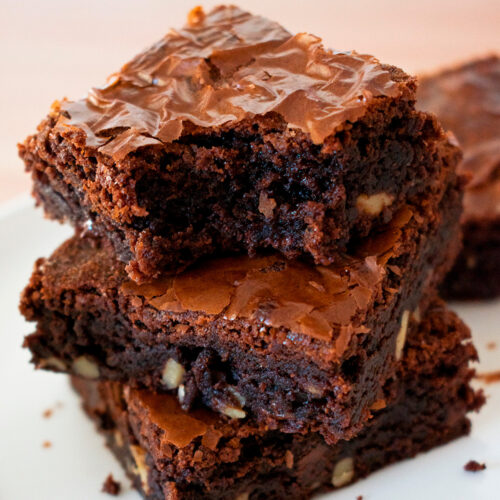

El brownie es uno de los postres mas ricos y faciles de hacer, para un atojo rapido y sencillo de realizar

Ingredientes
chocolate para reposteria
Mantequilla
Azúcar blanca
Azúcar morena
Huevos
Harina de trigo
Cocoa
Chispas de chocolate
Nueces
preparacion
Poner el chocolate y la mantequilla en un recipiente resistente al calor, y calentarlo al baño maria
por 2-3 minutos. Revuelva hasta que la mezcla quede suave. Alternativamente caliente en el microondas en
periodos de 30 segundos (necesitara 1 minuto y 30 segundos aprox.) revolver entre cada periodo. Dejar
reposar por unos minutos.
En otro contenedor combinar los dos tipos de azúcar y los huevos. Batir por 2 minutos o hasta obtener
una mezcla con un color pálido.
Agregar el chocolate derretido a la mezcla del azúcar y revolver con una espátula o cuchara de madera.
Tamizar la harina y cocoa en un bol seco.
Agregar las chispas de chocolate y las nueces a la mezcla de la harina y cocoa. Mezclar hasta que las
nueces y el chispas de chocolate queden cubiertas con los ingredientes secos. Esto evitara qué queden en
el fondo del molde y se integren con la masa de los brownies.
Añadir los ingredientes secos a la mezcla del chocolate. Mezclar con una espátula o cuchara de madera.
Asegurarse de hacerlo con movimientos envolventes y en una sola dirección hasta que todos los
ingredientes estén integrados.
Llevar la mezcla a un molde de 20cm x 20cm previamente engrasado y con papel pergamino para hornear.
Hornear por 28-30 minutos en un horno precalentado (180°C).
Sacar del horno y dejar reposar en el molde por 10 minutos. Deje enfriar los brownies durante 20
minutos antes de cortar.
Cortar los bordes antes de partir los brownies (opcional)